Michael 15 anos (mike), vem de uma familia de parentes divorciados, William e clara , junto a seus irmãos Chris de 10, e elizabeth de 13, seu pai William e um pai ausente que sempre está a trabalhar em algum projeto no porão da casa
Em um dia de domingo, o celular de michael toca, é ao atender e seu grupo de amigos perguntando se ele vai ajudar na pegadinha que o grupo está planejando contra chris em seu aniversario....
Michael se reune com seu grupo no dia seguinte planejando a pegadinha as escondidas, o grupo tem duas ideias para a pegadinha...
Ao recusar os amigos de michael até tentam convencer michael a mudar de ideia, dando argumentos e contra argumentos que podem dar bom e ruim....
No Porão do pai, Michael e seu grupo preparam um dos projetos do pai para a pegadinha, um robo, eles ficam as escondidas preparando para on tal esperado dia.....
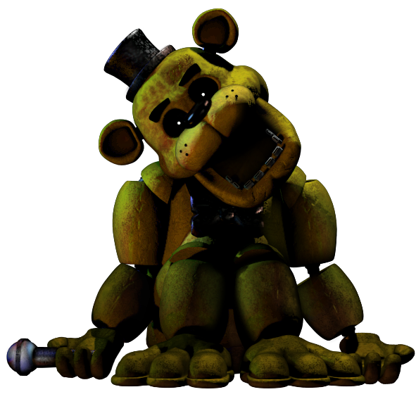Michael e seus amigos Assustam Chris com mascaras, o coitado reealmente e assustado o pequeno chris até ele chorar....mais a brincadeira e interrompida por elizabeth chamando michael e chris...
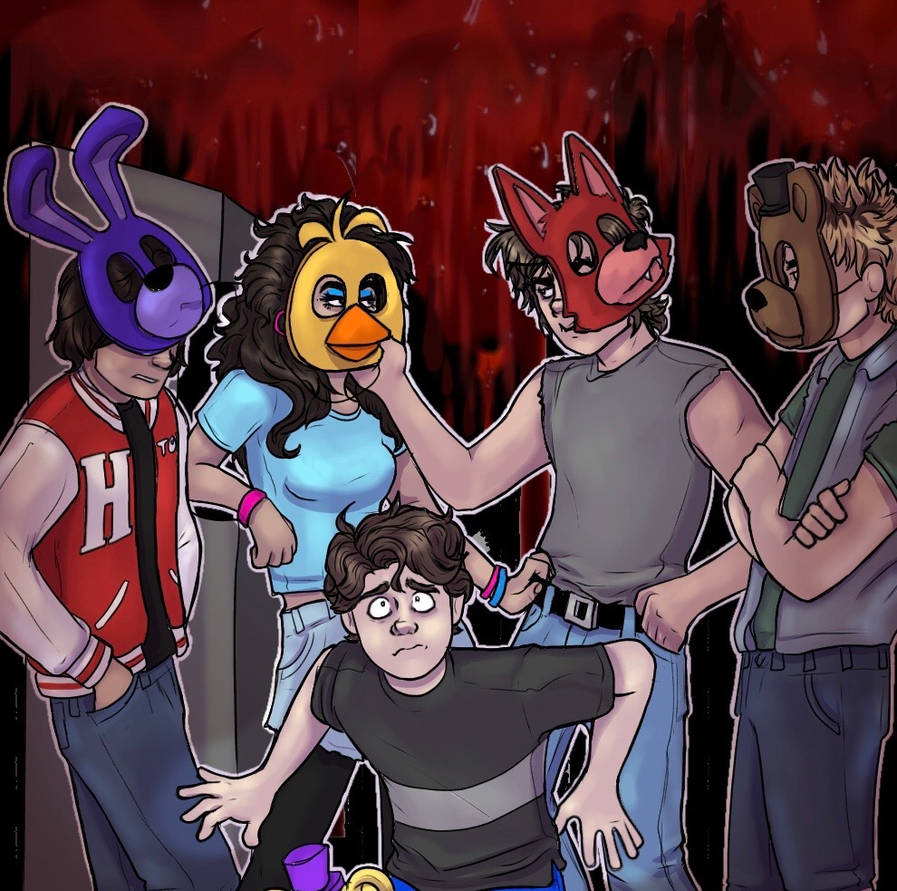Os amigos de michael contam tudo pelo telefone, mais no dia explicarão tudo ainda melhor no dia da festa...
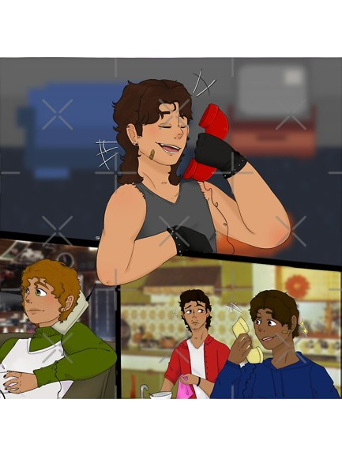Michael recusa e decide deixar essa pegadinha para lá, e decide fazer algo especial para chris
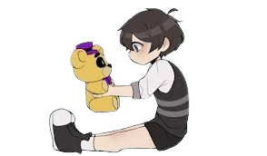No aniversario de Chris o grupo faz tudo como o planejando usando o projeto do pai assustando chris perfeitamente, mais um dos amigos tem uma ideia ainda melhor.
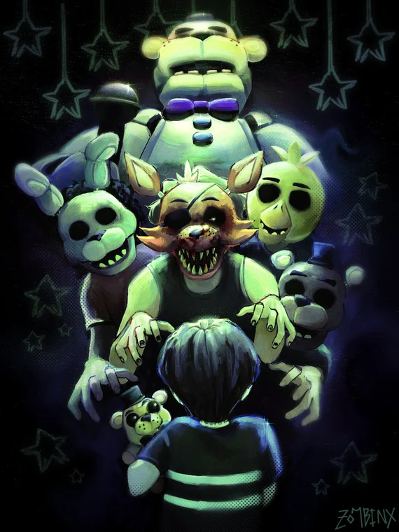Michael decidiu passar o dia com seu irmao mais novo, seja brincando, conversando, jogando é ate passeando, para chris foi o melhor anniversaio de sua vida... Isso até o pequeno levar uma queda e ralar a testa...
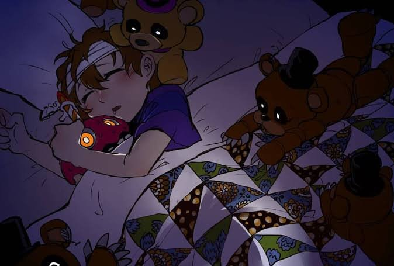Ao seguir a ideia do amigo, eles colocam o Chris na boca do Robo, o pequeno está ainda mais assustado, oque torna o trabalho do grupo bem mais complicaod, já que Chris se debate.....
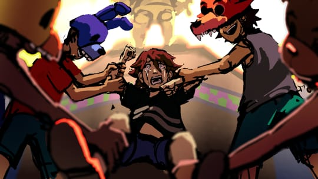Michael sente um mal pressentimento e decide nao seguir a ideia, Assim a brincadeira e interrompida pelo chamar de elizabeth....
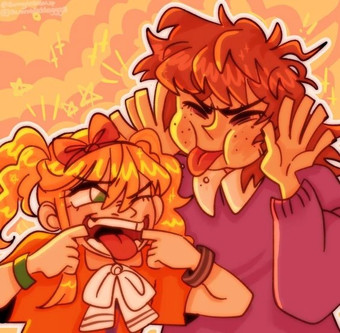Ao voltar em casa no final do dia, elizabeth chama a atenção de michael o pequeno Chris está em seus braços..
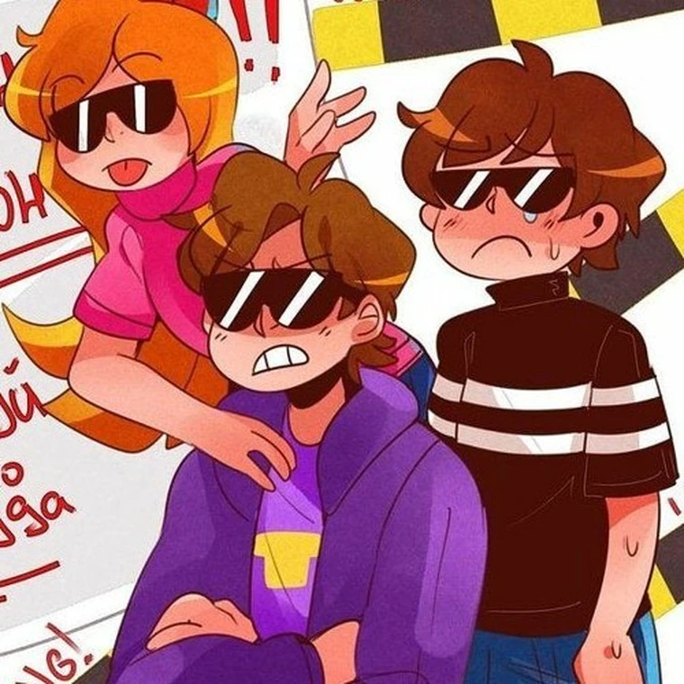O robo começa a dar pequenos estalinhos, mais somente Michael percebe os estalinhos......

Ao chegar na sala, Michael acalma Chris no caminho para sala onde ele e surpreendido por um feliz aniversario acompanhado de um grande bolo, onde toda a familia comemora o aniversario...
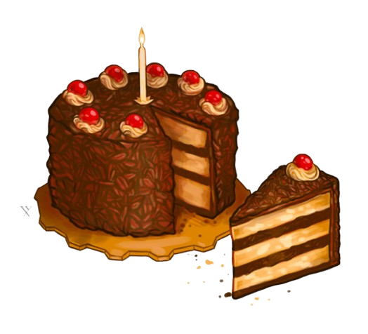Michael tira Chris das mandibulas do robo, e assim que ele faz, as mandibulas se fecham com força...
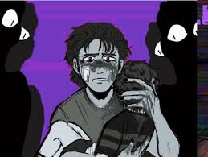As mandibulas do robo se fecham na cabeça do pequeno Chris...

Michael segura seu irmão em seus braços, o pequeno chora e treme... claramente assustado com o acontecimento....
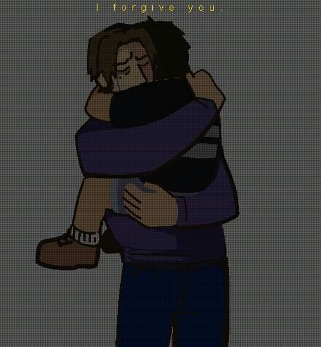Chris teve um ferimento grave em sua cabeça....Infelizmente o pequeno não resistirira aos ferimentos.... 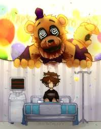
Apos o acontecimento, Michael decidiu dar um tempo ao pequeno o fazendo o se recuperar pelo medo....os amigos de michael tabem deram um tempo aos irmãos claramente arrependidos pela pegadinha....
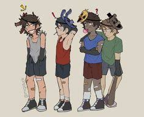Michael e seus amigos mesmo sendo menores, foram levados para reabilitação de jovens... onde ficram por um bom tempo, os amigos de michael seguiram, a vida... ja michael teve que viver com a memoria e perda de seu irmão... 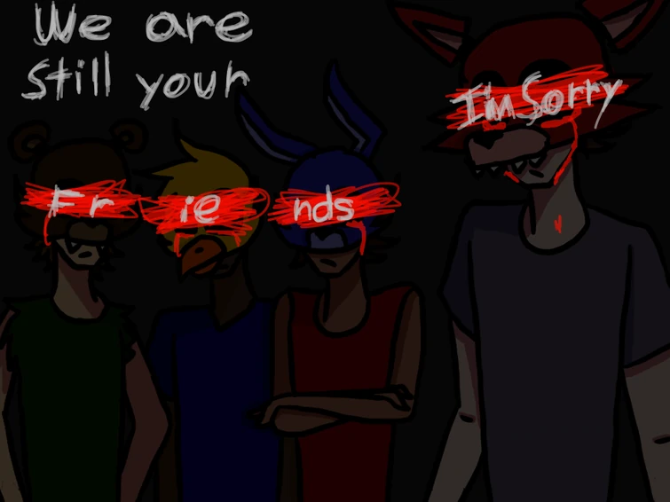
Isso e tudo por enquanto, poderá ter continuação dependendo de como a historia proseguir
FIM